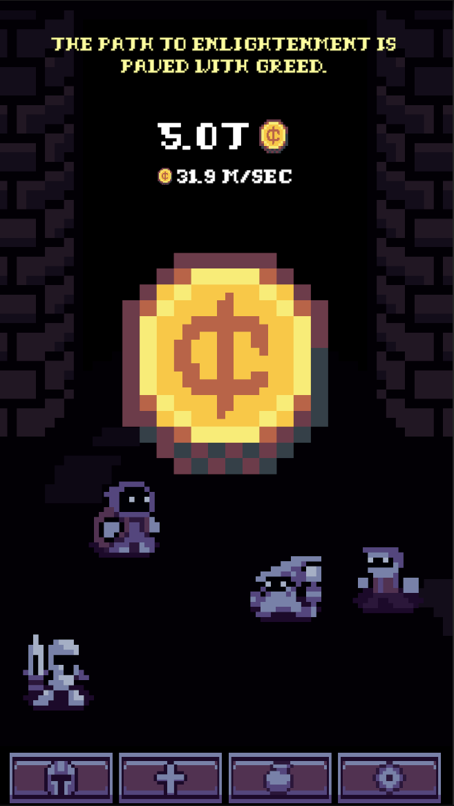
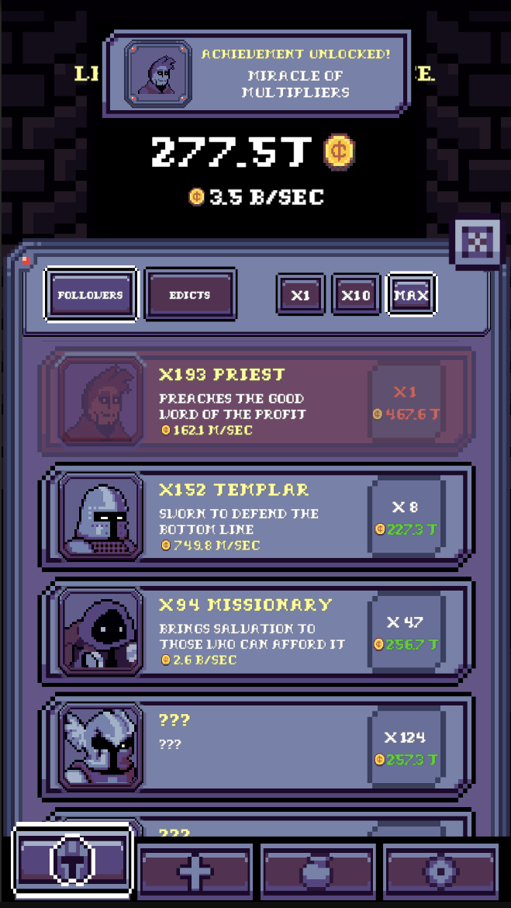
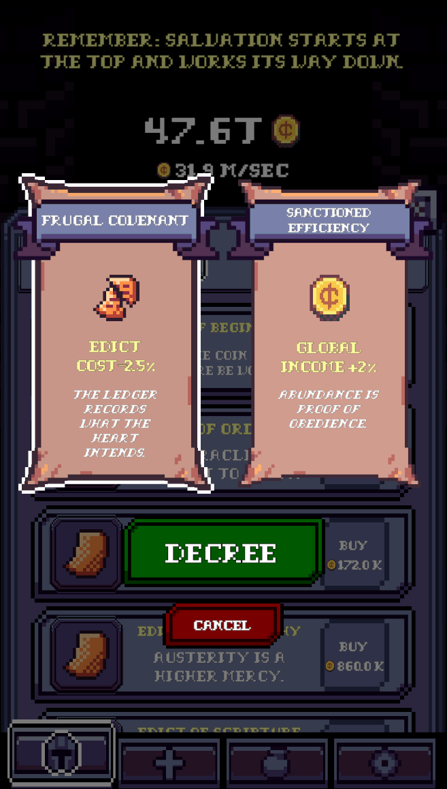
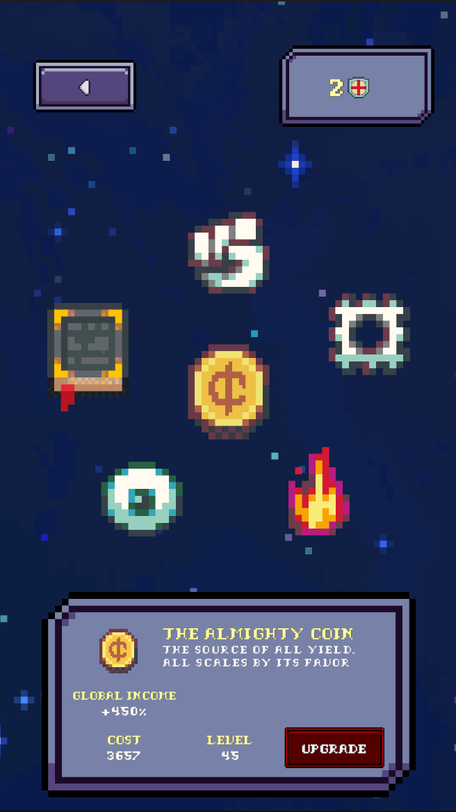

Cult of Coin
A silly, satirical idle clicker about worshipping money, overworking your followers, and checking in for five minutes a day to watch the numbers go up.
Key Features
Tap, Upgrade, Ascend, Repeat
Tap the holy coin, hire loyal followers, unlock generators, and ascend to start over with bigger multipliers. It’s simple, satisfying, and very on-purpose mindless.
Join the Money Cult
Propaganda tickers, overworked followers, and “totally normal” flavor text. It’s a light-hearted jab at capitalism, worship, and the joy of doing what the numbers tell you.
Five-Minute Rituals
Built for quick check-ins: open the game, make a few upgrades, ascend if you feel like it, and go live your actual life while your followers keep working.
Screenshots




About the Game
Cult of Coin started as a simple idea: take the mindless joy of idle clickers and lean into it so hard it becomes a joke about itself.
You tap a coin to earn money. You spend that money on followers and generators so you don’t have to tap as much. Eventually, you ascend, reset your progress, and do it all again—but faster. The goal isn’t to think too hard. It’s to enjoy the tiny dopamine hits, chuckle at the cult-y messaging, and move on with your day.
The game is free to play with optional boosts: rewarded ads for things like doubling your away-time coins, and a one-time “remove ads” purchase if you decide you’d rather keep the rituals but skip the interruptions.
Join the Cult (Soon)
Cult of Coin is preparing for release on iOS and Android. Want a ping when it’s live or interested in testing?
Legal: Privacy · Terms · Data Deletion